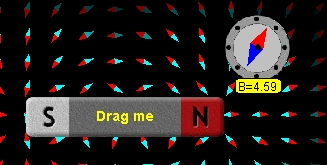

|  |
The Ejs Open Source 2 Bar Magnets & Compass Model shows the field of zero, one or two bar magnets and has a movable compass that reports the magnetic field values. The bar magnet model is built by placing a group of magnetic dipoles along the bar magnet. Users can examine and edit the model if Ejs is installed.
The 2 Bar Magnets and Compass Model was created/remixed by
lookang and can be found here
http://www.phy.ntnu.edu.tw/ntnujava/index.php?topic=1602.
I thank Wolfgang Christian, Francisco Esquembre and Anne J Cox for the
original Ejs applet called Magnetic Bar Field Model
http://www.compadre.org/osp/items/detail.cfm?ID=9414.
I mostly thanks Fu-Kwun Hwang for the masterful educator for his
informal learning discussion forum and guidance.
I also used the Easy Java Simulations (EJS) authoring and modeling
tool. Exercises written by Anne J Cox.
I also used some creative commons pictures from the internet.
I also took design parameters reference from Phet
http://phet.colorado.edu/simulations/sims.php?sim=Magnet_and_Compass
You can examine and modify a compiled EJS model if you run the program by double clicking on the model's jar file. Right-click within the running program and select "Open EJS Model" from the pop-up menu to copy the model's XML description into EJS. You must, of course, have EJS installed on your computer.
Information about EJS is available at: <http://www.um.es/fem/Ejs/> and in the OSP ComPADRE collection <http://www.compadre.org/OSP/>.